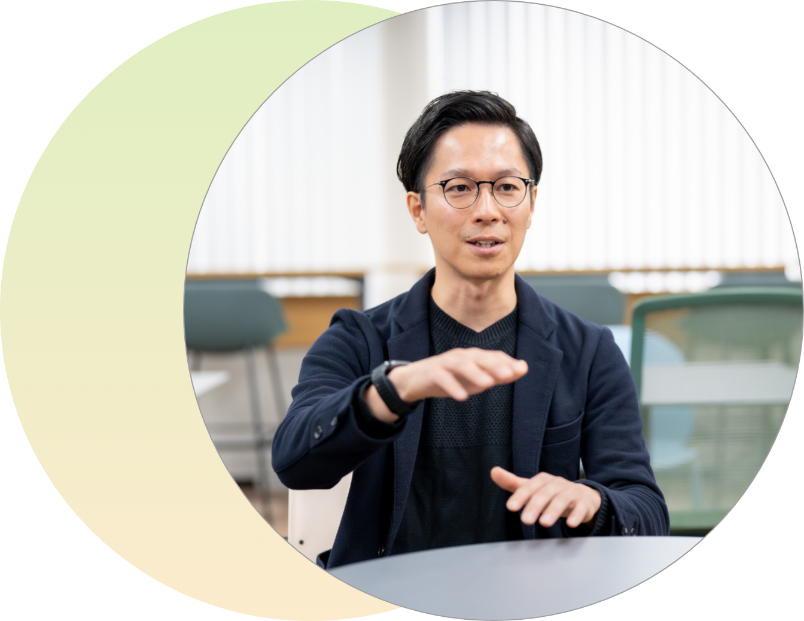
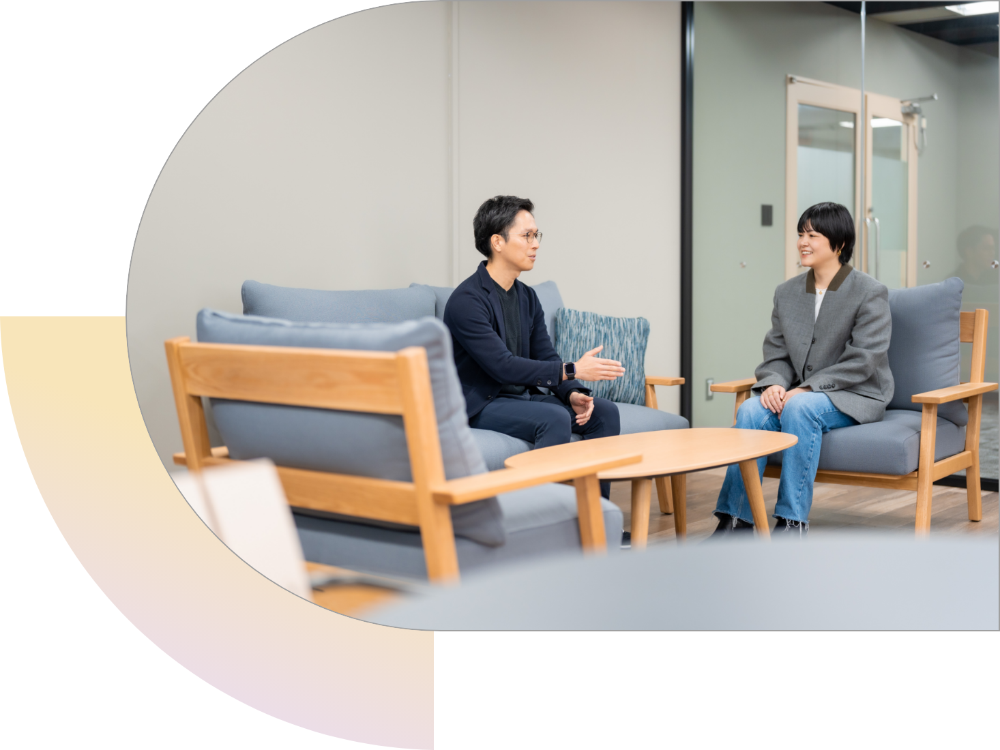
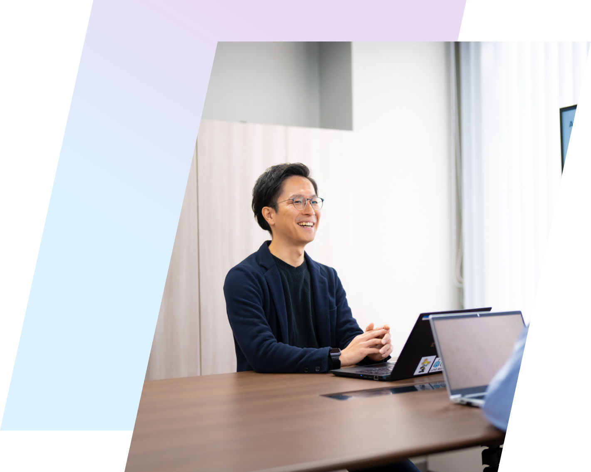
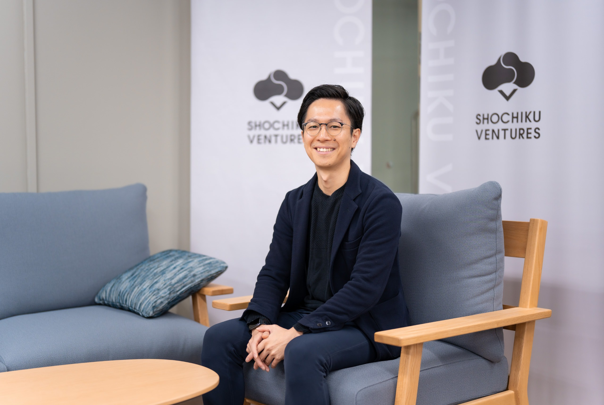

career story
エンターテイメントの未来に
新しい風穴を開けたい
イノベーション推進部
イノベーション戦略室
兼 松竹ベンチャーズ出向
2010年入社
総合人間科学部 教育学科卒
森川 朋彦
job
rotation
松竹では、社員一人ひとりの適性やキャリアの可能性を最大限に引き出すため、ジョブローテーション制度を導入しています。若いうちに多様な業務経験を積むことで、自身の適性を見極め、より充実したキャリアを築くサポートをしています。



１年目
松竹のアイデンティティ
を知った演劇の現場
私のキャリアは、歌舞伎の現場からスタートしました。もともとは歌舞伎について何も知らず、入社後の研修で初めて公演を見ただけ。まったくの素人でしたが、入社から3年の間、ここで松竹のビジネスの基礎を学びました。私たちの担当する仕事は、歌舞伎座や新橋演舞場といった常設会場以外で行う公演の製作サポート・運営。配属後すぐにアサインされた大阪平成中村座の公演は、特に思い出深い仕事です。俳優さんをはじめ、その関係者、演奏家、衣裳、床山、小道具、大道具、照明といった舞台スタッフなど、100名を超える規模の方々と関わることになり、その顔と名前を一致させることが最初の仕事でした。多く担当した歌舞伎の巡業における私の役割は、公演の運営すべてに関わる業務でした。ざっくりと言うと、事前準備としては、俳優やスタッフなど総勢100名程度の移動手段やホテルの確保はもちろん、各地のホール担当者様との公演の開催に向けたやり取り（チケット販売サポートや広告宣材物の確認作業など）があります。また、前日や当日になると、舞台機材などの搬入出、楽屋に関すること、さらにトラブルが発生した際の対応まで、非常に多岐にわたる業務ですが、現地で歌舞伎公演を滞りなく提供できるように動きます。特に巡業の場合は、1つの場所で公演を終えると、翌日の公演会場に向けてすぐ移動しなければならないので、本当にバタバタでした。何も知らない若者が急にこの世界に飛び込んだわけですから、うまくできないことや叱られることもしょっちゅうでしたね。それでも現場で汗をかくなか、多くの人々と手を取り合って日本の伝統文化をつくり上げていく感動は、ほかの会社、ほかの部署では絶対に味わえなかったでしょう。松竹のアイデンティティと呼べるビジネスを、体を使って学んだ3年間です。

4年目
経営のど真ん中に身を置き
視野を広げるきっかけに
4年目には秘書室へ異動。これまでの現場仕事とはうって変わり、経営の中心にいる社長をサポートする仕事を任されました。社長は会社のトップであり、社内外で実にさまざまな方とつながりがあり、日々そうした方々とコミュニケーションを取って会社の進む方向を決定しています。私はその経営判断を円滑に行うための情報を取りに行ったり、社長と現場との間に入って物事を進めたりする役割を担いました。そうしているうちに、自然と「経営の視点」が体に染み入ってくるものです。社内外でネットワークを広げ、組織として前に進む方法を1つずつブレイクダウンして学ぶ貴重な機会となりました。
8年目には経営企画部へ異動し、中期経営計画や年次予算などの策定サポートをはじめ、経営会議の運営や、プロジェクトチームの運営など、さまざまな仕事を経験しました。社内でパブリックコメントを公募し、ここから新しいプロジェクトを発足させたことも。それ以外にも、東京オリンピック・パラリンピックに向けたプロジェクトに関わるなど、非常に多様な経験を積んだ中身の濃い6年間でした。

10年目
出向先のＶＣで学び、
松竹ベンチャーズ設立に貢献
これまでの経験を経て、松竹がこれまで築き上げてきた事業のアセットを活用すれば、もっと多角的な事業の推進ができると感じていた私は、新しいテクノロジーやサービスで急速に事業成長を目指すスタートアップと手を組んでエンタメに関わる事業開発の可能性を探りたいと考えるように。そこで入社10年目に、とあるベンチャーキャピタル(VC)へ出向することになりました。松竹がファンドへの出資を行い、私という人材も派遣するわけなので、多くのコストを投じることになりますが、役員へのプレゼンテーションを通じてその必要性を訴え、認めてもらって実現したことです。出向してからは毎日が学びの連続。VCの投資先にあたるスタートアップと関わるなかでは驚くことが多かったですね。松竹のように歴史ある会社とスタートアップでは、物事の進め方も文化もまるで異なるからです。どちらがいいとか悪いとかではなく、その時々で最適な方法を取るべきという柔軟性を学びました。
こうして1年ほど出向先でVC業務について学んだ後、2022年に松竹のCVCである「松竹ベンチャーズ」の設立に関わり、今に至ります。新たなテクノロジーやアイデアを持つスタートアップと、私たち松竹のアセットを組み合わせることで、新しいエンタメを生み出すべく走り出したところ。業界の未来に新しい風を吹かせたい。この想いを胸に、明日も挑戦を続けていきます。

message
想いを実現するための
チャンスを掴める。
これまでを振り返って強く感じている、松竹で働くことの魅力。それは、現場で養った視点を活かして、経営企画や新規事業といった会社の新しい動きに携わるチャンスがあることです。もちろん、それを実現するためには自分から積極的に働きかける姿勢が不可欠ですが、「こうすれば松竹はもっと良くなる」というアイデアの実現に向けて前例のない取り組みにも挑戦できる環境はとても刺激的で、個人的にも組織としても成長を実感できます。この環境をフル活用しながら、松竹らしさを伸ばしつつ新しい魅力を生み出し、さらに多くの人々に価値を届ける仕事を実現したいと思います。